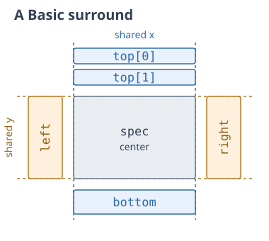
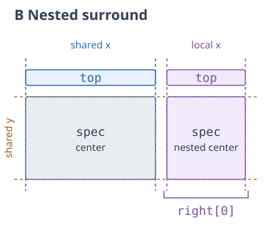

Surround Composition¶
The surround operator places plots above, below, or beside a central plot.
Shared x or y scales keep the surrounding plots aligned with the center. For
example, a heatmap can have column summaries above it and row annotations
beside it.
The layout is inspired by Marsilea, a Python library for composable visualizations (Zheng et al., 2025).


Dashed guides mark aligned plotting intervals. Labels name spec and the
groups inside surround. The nested right panel shares the outer y scale and
uses its own x scale for the annotation above it.
Example¶
{
"description": [
"Matrix with aligned summaries and annotations",
"Aligns row and column summaries with a growing categorical matrix and a nested metadata matrix."
],
"title": {
"text": "Expression and Mutations in Synthetic Tumors",
"fontSize": 16
},
"data": {
"values": [
{ "gene": "ESR1", "sample": "Tumor 1", "value": 2 },
{ "gene": "ERBB2", "sample": "Tumor 1", "value": 5 },
{ "gene": "MKI67", "sample": "Tumor 1", "value": 8 },
{ "gene": "ESR1", "sample": "Tumor 2", "value": 7 },
{ "gene": "ERBB2", "sample": "Tumor 2", "value": 3 },
{ "gene": "MKI67", "sample": "Tumor 2", "value": 1 },
{ "gene": "ESR1", "sample": "Tumor 3", "value": 4 },
{ "gene": "ERBB2", "sample": "Tumor 3", "value": 8 },
{ "gene": "MKI67", "sample": "Tumor 3", "value": 6 }
]
},
"scales": {
"x": {
"type": "band",
"domain": ["ESR1", "ERBB2", "MKI67"],
"paddingInner": 0.08
},
"y": {
"type": "band",
"domain": ["Tumor 1", "Tumor 2", "Tumor 3"],
"reverse": true,
"paddingInner": 0.08
}
},
"resolve": { "legend": { "color": "collected" } },
"spacing": 8,
"surround": {
"top": [
{
"name": "columnMeans",
"height": 60,
"transform": [
{
"type": "aggregate",
"groupby": ["gene"],
"fields": ["value"],
"ops": ["mean"],
"as": ["mean"]
}
],
"mark": { "type": "rect", "color": "#64748b" },
"encoding": {
"x": { "field": "gene", "type": "nominal", "axis": null },
"y": {
"field": "mean",
"type": "quantitative",
"axis": { "title": "Mean expr.", "tickCount": 3 }
}
}
}
],
"left": [
{
"name": "rowMeans",
"width": 70,
"transform": [
{
"type": "aggregate",
"groupby": ["sample"],
"fields": ["value"],
"ops": ["mean"],
"as": ["mean"]
}
],
"mark": { "type": "rect", "color": "#64748b" },
"encoding": {
"x": {
"field": "mean",
"type": "quantitative",
"scale": { "reverse": true },
"axis": { "title": "Mean expr.", "tickCount": 3 }
},
"y": { "field": "sample", "type": "nominal", "axis": null }
}
}
],
"right": [
{
"name": "rowMetadata",
"spacing": 8,
"data": {
"values": [
{ "gene": "TP53", "sample": "Tumor 1", "category": "WT" },
{ "gene": "TP53", "sample": "Tumor 2", "category": "Mutated" },
{ "gene": "TP53", "sample": "Tumor 3", "category": "WT" },
{ "gene": "PIK3CA", "sample": "Tumor 1", "category": "Mutated" },
{ "gene": "PIK3CA", "sample": "Tumor 2", "category": "WT" },
{ "gene": "PIK3CA", "sample": "Tumor 3", "category": "Mutated" }
]
},
"resolve": { "scale": { "color": "shared" } },
"scales": {
"x": {
"type": "band",
"domain": ["TP53", "PIK3CA"],
"paddingInner": 0.08
},
"color": { "type": "ordinal", "domain": ["WT", "Mutated"] }
},
"encoding": {
"x": { "field": "gene", "type": "nominal", "axis": null },
"color": {
"field": "category",
"type": "nominal",
"legend": { "title": "Mutation status" }
}
},
"spec": {
"name": "category",
"width": { "step": 35 },
"mark": "rect",
"encoding": {
"x": {
"field": "gene",
"type": "nominal",
"axis": { "title": "Mutation genes", "labelAngle": 0 }
},
"y": {
"field": "sample",
"type": "nominal",
"axis": { "orient": "right", "title": "Samples" }
}
}
},
"surround": {
"top": {
"resolve": { "scale": { "color": "shared" } },
"views": [
{
"name": "categoryDistribution",
"height": 60,
"transform": [
{
"type": "aggregate",
"groupby": ["gene", "category"],
"fields": ["sample"],
"ops": ["count"],
"as": ["count"]
},
{
"type": "stack",
"field": "count",
"groupby": ["gene"],
"sort": { "field": "category", "order": "descending" },
"offset": "normalize",
"as": ["start", "end"]
}
],
"mark": "rect",
"encoding": {
"y": {
"field": "start",
"type": "quantitative",
"scale": { "domain": [0, 1], "zoom": false },
"axis": {
"orient": "right",
"title": "Fraction",
"format": ".0%",
"values": [0, 0.5, 1]
}
},
"y2": { "field": "end" }
}
}
]
}
}
}
]
},
"spec": {
"name": "matrix",
"mark": "rect",
"encoding": {
"x": {
"field": "gene",
"type": "nominal",
"axis": { "title": "Expression genes", "labelAngle": 0 }
},
"y": { "field": "sample", "type": "nominal", "axis": null },
"color": {
"field": "value",
"type": "quantitative",
"legend": { "title": "Expression: log2(TPM + 1)" }
},
"tooltip": { "field": "value", "type": "quantitative" }
}
},
"config": {
"axis": { "offset": 10 },
"legend": {
"orient": "right",
"direction": "vertical",
"gradientLength": 80
}
}
}
Specification¶
Put the central plot in spec and the surrounding plots in surround. The
optional top, right, bottom, and left properties each accept an array
of plots. An object with views can provide shared data and other settings
for one side.
This minimal specification places a plot to the right of the center. Both plots use the same y scale:
{
"data": { "values": [{ "column": 0, "row": 0, "total": 5 }] },
"spec": {
"width": 160,
"height": 100,
"mark": "rect",
"encoding": {
"x": { "field": "column", "type": "index", "axis": null },
"y": { "field": "row", "type": "index", "axis": null }
}
},
"surround": {
"right": [
{
"width": 80,
"mark": "rect",
"encoding": {
"x": { "field": "total", "type": "quantitative" },
"y": { "field": "row", "type": "index", "axis": null }
}
}
]
}
}
Alignment and sizing¶
Top and bottom tracks share the center's x scale and stack vertically. Left and right tracks share its y scale and stack horizontally. Tracks are ordered top-to-bottom or left-to-right, including on the top and left sides.
The center determines the aligned plotting width and height. Set only a side
track's thickness: height on top/bottom, or width on left/right. Fixed,
growing, and step-based center sizes use the existing sizing rules.
The surround's own width and height describe the complete composition.
Inside a concat, surrounding panels reserve overhang around the center. Central plots align within each row and column even when their annotations differ in size.
The surround's spacing separates the center from its sides. A side group's
spacing separates its tracks. Both default to 10 pixels. Hidden tracks collapse;
an empty or entirely hidden side also removes its gap. Hiding the center hides
the composition.
Track axes and other decorations can extend into empty corner cells. The
overhang setting controls their space
reservation; space occupied by nested panels always remains reserved.
Shared settings and scales¶
Outer data, transforms, encodings, and parameters flow to the center and sides.
A side object can declare these settings once for its views, such as a shared
metadata table for several annotation columns.
Each track has an independent perpendicular scale by default. A group's resolve
can share those local scales among its tracks. They remain separate from the
center and the opposite side. Non-positional scales also remain independent
by default.
Shared coordinate domains include contributions from the participating plots.
Outer scales.x and scales.y can set authoritative domains, order, reversal,
grouping gaps, and zoom settings. An aligned scale cannot be disconnected with
an independent or excluded resolution.
Configure axes on the center or individual tracks. Redundant aligned axes can
be suppressed with axis: null. Titles, padding, clipping, and legends use their
ordinary settings. Collected legends can combine
independent legends around the complete surround.
Nested annotations¶
Side tracks can themselves use surround. The parent aligns a nested track's
central plotting interval, leaving room for its own annotations. In the example
above, the mutation matrix shares sample rows with the expression matrix, and
its top summaries share its gene columns. Both datasets are synthetic.
To share colors and a legend between the nested center and its top annotations, set
resolve.scale.color to "shared" on both the nested surround and its top group.
Omit the externally aligned size from the nested center: height on left/right,
or width on top/bottom. The outer center supplies that plotting length. Nested
annotations extending along that dimension need fixed or step-based thicknesses.
The outer center and ordinary perpendicular track thicknesses can still grow.
Nested panels can occupy free corners but cannot overlap other panels. If an overlap causes an error, adjust spacing or composition to separate them.
Supported plots¶
The center accepts unit plots, layers, multiscale layers, and imports resolving
to these. Side tracks also accept nested surrounds. Nested centers, authored
concats, and facets remain unsupported. Scrollable viewports, surround-level
axes, and axes shared across regions are also unsupported. Input-owning selections and
rulers belong on the individual plots; ordinary outer parameters remain valid
shared values and push: "outer" targets.
More examples¶
- Set intersections with an UpSet plot
- Clustered heatmap with dendrograms
- PISA interaction matrix with genomic margin tracks
Properties¶
specRequired- Type: UnitSpec | LayerSpec | MultiscaleSpec | ImportSpec
Central plot. Accepts unit plots, layers, multiscale layers, and imports resolving to these. Its width and height determine the aligned plot size.
surroundRequired- Type: SurroundSides
Optional top, right, bottom, and left groups. Each accepts an array of plots or an object with
viewsand shared view settings. Top/bottom plots share the center's x scale; left/right plots share its y scale. spacing- Type: number
Gap between the center and each side, in pixels. Default value:
10
Sides¶
top- Type: (UnitSpec | LayerSpec | MultiscaleSpec | ImportSpec | SurroundSpec)[] | SurroundSideSpec
Plots above the center, stacked top-to-bottom and sharing its x scale.
right- Type: (UnitSpec | LayerSpec | MultiscaleSpec | ImportSpec | SurroundSpec)[] | SurroundSideSpec
Plots to the right, stacked left-to-right and sharing the center's y scale.
bottom- Type: (UnitSpec | LayerSpec | MultiscaleSpec | ImportSpec | SurroundSpec)[] | SurroundSideSpec
Plots below the center, stacked top-to-bottom and sharing its x scale.
left- Type: (UnitSpec | LayerSpec | MultiscaleSpec | ImportSpec | SurroundSpec)[] | SurroundSideSpec
Plots to the left, stacked left-to-right and sharing the center's y scale.
Side groups¶
viewsRequired- Type: array
Plots on this side, ordered top-to-bottom on top/bottom or left-to-right on left/right. Accepts unit plots, layers, multiscale layers, nested surrounds, and imports resolving to these.
spacing- Type: number
Gap between tracks, in pixels. Default value:
10